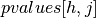
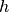
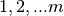
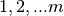

pyampute.exploration¶
In the pyampute.exploration folder, we provide functionality for inspecting incomplete datasets.
mdPatterns displays all unique missing data patterns in an incomplete dataset, which is useful for investigating whether there is structure (or a good explanation) for the occurrence of missing data.
MCARTest performs a statistical hypothesis test to evaluate whether it is likely that missing data has a Missing Completely At Random (MCAR) mechanism.
pyampute.exploration.md_patterns module¶
Displays missing data patterns in incomplete datasets
- class pyampute.exploration.md_patterns.mdPatterns¶
Bases:
objectDisplays missing data patterns in incomplete datasets
Extracts all unique missing data patterns in an incomplete dataset and creates a visualization.
1(red) and0(blue) refer to missing and observed values respectively.- Parameters
None (currently no parameters available.) –
- md_patterns¶
k is the number of unique missing data patterns and m the number of dataset columns (features).
0and1correspond to missing and observed values respectively. The first row displays the data rows with no missing values and the last row gives column totals. The first column displays the count or proportion of rows that follow a pattern and the last column displays the number of missing values per pattern.- Type
pandas DataFrame of shape (k+2, m+2)
See also
MultivariateAmputationTransformer for generating multivariate missingness in complete datasets
Notes
This class is useful for investigating any structure in an incomplete dataset, and can help to understand possible reasons or solutions. We follow the logic of a comparable R-function, mice::md_patterns.
Examples
>>> import numpy as np >>> import pandas as pd >>> from pyampute.exploration.md_patterns import mdPatterns >>> nhanes2 = pd.read_csv("data/nhanes2.csv") >>> mdp = mdPatterns() >>> patterns = mdp.get_patterns(nhanes2) >>> print(patterns) row_count age hyp bmi chl n_missing_values rows_no_missing 13 1 1 1 1 0 1 3 1 1 1 0 1 2 1 1 1 0 1 1 3 1 1 0 0 1 2 4 7 1 0 0 0 3 n_missing_values_per_col 0 8 9 10 27
- get_patterns(X, count_or_proportion='count', show_plot=True)¶
Extracts and visualizes missing data patterns in an incomplete dataset
- Parameters
X (Matrix of shape (n, m)) – Dataset with missing values. n rows (samples) and m columns (features).
count_or_proportion (str, {"count", "proportion"}, default : "count") – Whether the number of rows should be specified as a count or a proportion.
show_plot (bool, default : True) – Whether a plot should be displayed using
plt.show.
- Returns
md_patterns – k is the number of unique missing data patterns and m the number of dataset columns (features). The first row displays the data rows with no missing values and the last row gives column totals. The first column displays the count or proportion of rows that follow a pattern and the last column displays the number of missing values per pattern.
- Return type
pandas DataFrame of shape (k+2, m+2)
pyampute.exploration.mcar_statistical_tests module¶
Statistical hypothesis test for Missing Completely At Random (MCAR)
- class pyampute.exploration.mcar_statistical_tests.MCARTest(method='little')¶
Bases:
objectStatistical hypothesis test for Missing Completely At Random (MCAR)
Performs Little’s MCAR test (see Little, R.J.A. (1988)). Null hypothesis: data is Missing Completely At Random (MCAR). Alternative hypothesis: data is not MCAR.
- Parameters
method (str, {"little", "ttest"}, default : "little") – Whether to perform a chi-square test on the entire dataset (“little”) or separate t-tests for every combination of variables (“ttest”).
See also
mdPatternsDisplays missing data patterns in incomplete datasets
MultivariateAmputationTransformer for generating multivariate missingness in complete datasets
Notes
We advise to use Little’s MCAR test carefully. Rejecting the null hypothesis may not always mean that data is not MCAR, nor is accepting the null hypothesis a guarantee that data is MCAR. See Schouten et al. (2021) for a thorough discussion of missingness mechanisms.
- static littles_mcar_test(X)¶
Implementation of Little’s MCAR test
- Parameters
X (Matrix of shape (n, m)) – Dataset with missing values. n rows (samples) and m columns (features).
- Returns
pvalue – The p-value of a chi-square hypothesis test. Null hypothesis: data is Missing Completely At Random (MCAR). Alternative hypothesis: data is not MCAR.
- Return type
float
- static mcar_t_tests(X)¶
Performs t-tests for MCAR for each pair of features.
- Parameters
X (Matrix of shape (n, m)) – Dataset with missing values. n rows (samples) and m columns (features).
- Returns
pvalues – The p-values of t-tests for each pair of features. Null hypothesis for cell : data in feature  is Missing Completely At Random (MCAR) with respect to feature
 for all
for all  in . Diagonal values do not exist.
in . Diagonal values do not exist.- Return type
pandas DataFrame of shape (m, m)